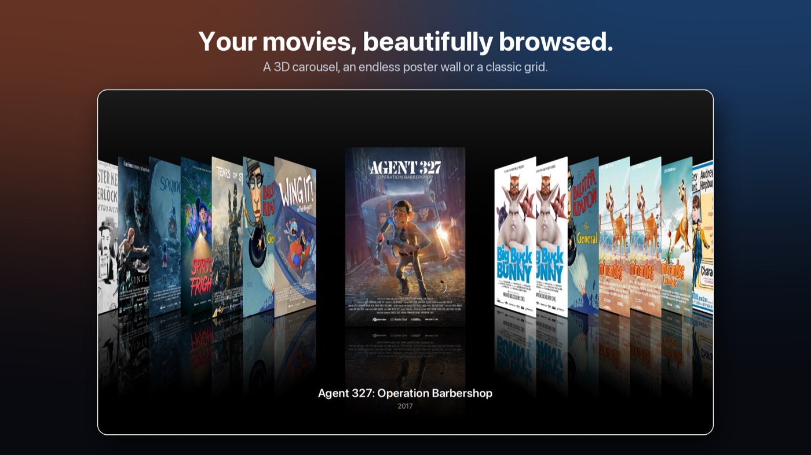

What it is
Kuna Flow plays the movies on your own Jellyfin media server (free, open-source software you run at home) on Apple TV: a wall of posters, collections in story order, Scenes, Kids Mode and Kuna Flow Studio to make it yours. It doesn't include, sell or stream any movies of its own, apart from a demo of public-domain and Creative Commons films.
Support
Questions, problems or ideas? Email hellokunaflow@gmail.com.
Tips: Studio → Setup Check finds most connection and playback problems. If a movie won't play, turn on Studio → Playback → Problem notes for a moment; the notes appear in your Jellyfin Dashboard → Logs.